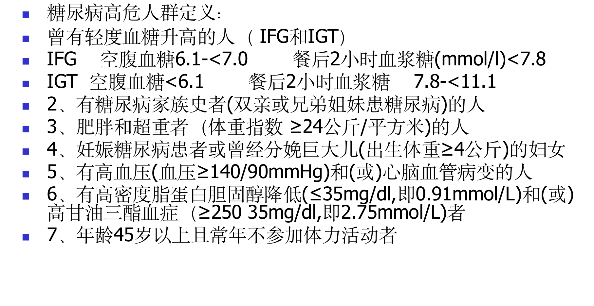
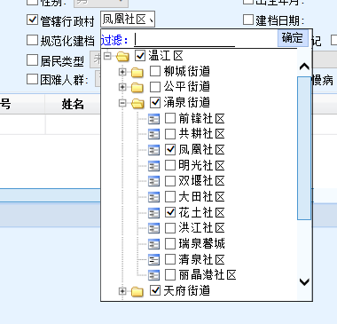

1、档案建立说明
• 首先需要建立个人健康档案，在此基础上才能建立其余专项档案及服务记录（如高血压、糖尿病、肺结核、健康体检等）
• 居民个人档案建档分类，0~6岁建档需要封面+新生儿方式记录表（V1.0暂未涉及），7岁及以上需要封面+个人基本信息表
• 个人档案需判断重复性，一个人只能有一份档案，有身份证号或社保信息时则以身份证号及社保号作为唯一性判断，若无身份证号，则采用姓名+出生日期+性别作为唯一性判断，不能重复建档；新建档案是输入信息若已有档案则展示在弹框列表中（不论管理机构是否为本机构，不论档案是否正常都展示）
• 家庭档案需判断重复性，一个人只能有一个家庭，一个家庭只能有一个户主，若已有户主，则提示该家庭已有户主，确认更改户主？若已有家庭，则提示该居民已有家庭，需要更换家庭请先解除与现家庭的关系再添加。
说明
2、合格档案说明
• 合格档案的规则：居民个人基本信息表中的①性别 ②出生日期 ③联系人电话 ④工作单位 ⑤血型 ⑥文化程度 ⑦婚姻状况 ⑧物过敏史 ⑨既往史 ⑩家族史 ⑪残疾情况，以上11项中有2项及以上空项、漏项为不合格。
3、档案编号生成说明
• 统一为居民健康档案进行编码，采用17位编码制，以国家统一的行政区划编码为基础，以村(居)委会为单位，编制居民健康档案唯一编码。
• 民健康档案编码
统一为居民健康档案进行编码，采用17位编码制，以国家统一的行政区划编码为基础，村（居）委会为单位，编制居民健康档案唯一编码。同时将建档居民的身份证号作为统一的身份识别码，为在信息平台下实现资源共享奠定基础。
第一段为6位数字，表示县及县以上的行政区划，统一使用《中华人民共和国行政区划代码》（GB2260）；
第二段为3位数字，表示乡镇(街道)级行政区划，按照国家标准《县以下行政区划代码编码规则》（GB/T10114-2003）编制；
第三段为3位数字，表示村（居）民委员会等，具体划分为：001-099表示居委会，101-199表示村委会，901-999表示其他组织；
第四段为5位数字，表示居民个人序号，由建档机构根据建档顺序编制。
在填写健康档案的其他表格时，必须填写居民健康档案编号，但只需填写后8位编码。
4、管理列表中的档案数据来源
• 各管理列表中的档案信息（除了信息恢复）只能查出目前状态为正常（未删除、未死亡）且管理机构为本机构的档案，卫健局能查看所有机构的档案
• 信息恢复管理列表中只能查出已删除的档案信息
• 若为各专项档案的管理列表，如高血压、糖尿病、肺结核、严重精神障碍患者，展示已经建立了专项记录的档案信息
• 老年人管理列表则展示年龄为65岁以上的档案，年龄设置根据各地区不同而不同
5、个人信息页面说明
• 个人信息页面以全覆盖页面展示，左侧为树形结构，展示所有相关档案（老年人及中医药健康管理服务记录管理菜单到了老年人设置的年龄才展示，默认65岁及以上，有些地方为60岁，此年龄应动态控制）
• 从管理列表进入个人信息页则默认展示管理相关表单，服务记录则展示最近一次服务记录数据
• 从个人档案管理进入个人信息页则默认展示个人首页
6、高血压高危人群判断规则
（1）血压高值（收缩压130～139mmHg和/或舒张压85～89mmHg）；
（2）超重或肥胖，和（或）腹型肥胖：
超重：28 kg/m2>BMI ≥ 24 kg/m2 ；肥胖：BMI ≥ 28 kg/m2
腰围：男≥90cm（2.7尺），女≥85cm（2.6尺）为腹型肥胖
（3）高血压家族史（一、二级亲属）；
（4）长期膳食高盐；
（5）长期过量饮酒（每日饮白酒≥100ml）；
（6）年龄≥55岁。
7、糖尿病高危人群判断规则

8、体质指数计算方法
体重（kg)/【身高（m）的平方】，结果保留小数点后2位
9、各个表单的验证及规则详见文档：公卫表单字段及验证规则（2017版）
11、体检表异常规则 （详情见体检健康评价及健康指导文档）
根据填写的数据自动判断是否为异常并在健康评价处同步展示
判断依据：
• 体检无异常判定：
1.非高血压、糖尿病居民体检结果均无异常；
2.高血压、糖尿病居民血压血糖控制满意且体检结果均无异常。
• 体检有异常判定：
1.非高血压、糖尿病居民，血压高值（130-139/85-89mmhg）；血压升高（140/90mmhg以上）；空腹血糖受损（6.1-6.9mmol/l）；血糖升高（7.0mmol/l以上）。如果血压高值范围为130-139/85-89mmhg，评价为血压高值（具体血压值），以此类推。
2.若为老年人，老年人生活自理能力评估为轻度、中度依赖或不能自理需评价为生活能力轻度依赖 ；情感粗筛阳性需要评价情感状态粗筛阳性。
3.若为严重精神障碍患者，需评价精神和行为异常。
4.体重：BMI为24-28kg/m2需评价：超重(BMI具体数值kg/m2) ； BMI28kg/m2及以上为需评价肥胖（具体数值kg/m2），低于18.5为偏瘦。
5.腹型肥胖：女腰围85cm及以上，男腰围90cm及以上需评价腹型肥胖（具体数值cm)
......详情见文档。
10、专项档案与随访记录
• 有了高血压、糖尿病专项档案、严重精神障碍患者的个人信息补充表后才能有高血压、糖尿病、严重精神障碍患者的随访记录
• 建立了肺结核患者的第一次入户随访后，可以录入后面的随访记录
• 删除了专项档案后则随访记录一并删除；恢复随访则需要有专项档案
12、管理列表中的管辖行政村
• 管辖行政村指具体的街道居（村）委会
• 按照角色权限区分下拉内容，若权限为区域则下拉包含所管区域的区、县、镇/街道、社区/村委；若为机构权限则下拉包含该机构所管区域的区、县、镇/街道、社区/村委

示例：